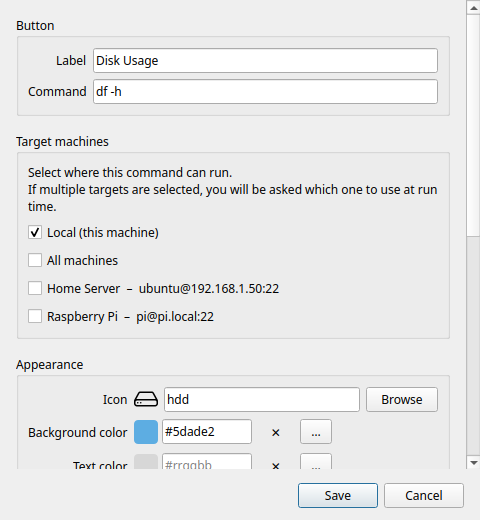

Editor de botones
El editor de botones se abre al crear uno nuevo (+ / Ctrl+N) o al editar uno existente (clic derecho → Editar).

Etiqueta
El texto que se ve en la casilla del botón dentro de la cuadrícula. Que sea corto: las etiquetas largas se recortan en las casillas pequeñas.
Comando
El comando que se va a ejecutar. Es una línea de comandos completa. Ejemplos:
df -h # resumen del uso del disco
ping -c 4 8.8.8.8 # comprobar la conexión
sudo systemctl restart nginx # reiniciar un servicio
git -C ~/miproyecto pull # actualizar un repositorio
tar -czf ~/copia.tar.gz ~/docs # crear un archivo comprimido
Puedes usar las funciones del intérprete: tuberías (|), redirecciones (>), sustitución de comandos ($()) y cadenas de varias instrucciones (&&, ;).
Warning
Los comandos se ejecutan con tu usuario actual (o con sudo, si lo incluyes en el comando). No hay ninguna caja de arena: el comando tiene acceso completo a tus archivos. Añade solo comandos en los que confíes.
Máquinas de destino
Determina dónde se ejecuta el comando. La lista muestra Local arriba, seguido de todas tus máquinas SSH configuradas.
Local: se ejecuta en tu ordenador mediante un subproceso normal. No hace falta SSH.
Máquina SSH: activa una o varias máquinas con sus interruptores. El comando se ejecuta en cada máquina activada por SSH.
- Si solo está activado Local: se ejecuta en local, sin selector.
- Si hay una sola máquina activada (y Local está apagado): se ejecuta directamente en ella, sin selector.
- Si hay dos o más destinos activados: al pulsar aparece el selector de máquina.
Todas las máquinas: un interruptor arriba de la lista para activar o desactivar todas de golpe (elige todas las máquinas compatibles con el sistema del comando).
Sistema del comando
El sistema del comando le dice a Commandeck para qué sistema operativo está escrito: Multiplataforma (por defecto, funciona en cualquiera), Linux, macOS o Windows. Sirve para dos cosas:
- En la lista de máquinas de arriba, las que no coinciden aparecen en gris con un ⚠, así no puedes apuntar por error un comando de Linux a una máquina Windows (ni al revés). Una máquina que ya hubieras elegido sigue visible para que puedas quitarla.
- Al importar, la versión Linux y la versión Windows del mismo botón se conservan una junto a otra en vez de chocar.
El sistema de cada máquina se indica en su editor; Linux y macOS se consideran compatibles. Deja un botón en Multiplataforma salvo que su comando sea propio de un sistema.
Función Pro
Añadir máquinas SSH requiere Commandeck Pro. En la versión gratuita solo está disponible Local.
Aspecto
Icono
Elige un icono en el selector integrado. Solo se muestran los iconos disponibles y representables en tu sistema.
Escribe en el campo de búsqueda para filtrarlos por nombre. El icono elegido se ve en la vista previa del botón, arriba del diálogo.
Para quitar el icono del todo, activa Ocultar el icono (más abajo).
Color de fondo
El color de relleno de la casilla. Pulsa el campo de color para abrir el selector:
- Una paleta GNOME de 40 colores para elegir rápido
- Un campo hexadecimal (
#rrggbb) para valores exactos
Déjalo en blanco para el color de casilla que trae el sistema.
Color del texto
El color de la etiqueta del botón, independiente del color de fondo. Mismo selector que arriba.
Déjalo en blanco para usar el color de etiqueta por defecto (que se adapta solo al modo claro u oscuro).
Ocultar la etiqueta
Cuando está activado, la etiqueta no se ve y solo queda el icono. Útil en casillas muy pequeñas o con iconos que se reconocen al instante.
Ocultar el icono
Cuando está activado, el icono no se ve y solo queda el texto. Útil cuando ningún icono encaja o cuando la etiqueta sola ya es clara.
Organización
Categoría
Escribe el nombre de una categoría para meter este botón en un grupo. Los botones que comparten nombre de categoría se agrupan bajo la misma entrada del filtro de categorías.
- Los nombres distinguen mayúsculas (
Servidoryservidorson categorías distintas) - Déjalo en blanco para dejar el botón sin categoría
- Para renombrar una categoría, edita todos sus botones y cambia el nombre
Con el clic derecho sobre un botón de la cuadrícula también tienes Mover a una categoría para reasignarlo rápido.
Comportamiento
Descripción emergente
Texto propio que aparece al pasar el ratón por encima del botón. Si lo dejas en blanco, se muestra el propio comando.
Úsalo para añadir una explicación en lenguaje humano cuando el comando no se explique solo.
Confirmar antes de ejecutar
Cuando está activado, al pulsar el botón aparece una ventana de confirmación («¿Ejecutar este comando?») antes de hacer nada. Útil para comandos destructivos: reinicios, apagados o borrados.
El valor por defecto de esta opción se ajusta en Preferencias → General → Confirmar antes de ejecutar, por defecto.
Modo de ejecución
Controla qué pasa después de ejecutar el comando.
| Modo | Comportamiento |
|---|---|
| Silencioso | El comando se ejecuta en segundo plano. Un aviso emergente indica si ha ido bien o mal. |
| Mostrar la salida | Al terminar el comando se abre una ventana con todo el texto normal y el de errores. |
| Abrir en terminal | El comando se lanza en el emulador de terminal de tu sistema (sesión interactiva completa). |
Tip
Mostrar la salida se abre sola cuando algo falla, sea cual sea el modo elegido: siempre ves el error.
Usa Abrir en terminal para programas interactivos: htop, vim, python3, sesiones ssh, etc.
Perfil de ejecución
Función Pro
Los perfiles de ejecución requieren Commandeck Pro.
Asigna a este botón un perfil de ejecución guardado. Un perfil reúne un usuario de destino, una carpeta de trabajo y una contraseña de sudo en una sola entrada reutilizable.
Cuando hay un perfil elegido, los campos Ejecutar como usuario y Carpeta de trabajo del botón quedan sustituidos por los del perfil, y esos controles se ponen en gris automáticamente.
Elige Ninguno para usar los campos propios del botón.
Ejecutar como usuario
Ejecuta el comando con otro usuario mediante sudo -u <usuario>. Rellena este campo con un nombre de usuario del sistema (por ejemplo, www-data o postgres).
Se ignora cuando hay un perfil de ejecución asignado (manda el usuario del perfil).
Note
Para ejecutar con un usuario concreto y que la contraseña de sudo se proporcione sola, usa un perfil de ejecución: guarda la contraseña de forma segura y la pasa sin preguntar.
Permitir que la IA ejecute este botón
Función Pro
Requiere Commandeck Pro y el servidor MCP.
Desactivado de fábrica. Cuando está activado — y la ejecución por la IA está activada en Preferencias → Integración con el escritorio — un asistente de IA puede lanzar este botón por MCP. Combínalo con Confirmar antes de ejecutar para que la IA tenga que enseñarte el comando exacto y esperar tu aprobación. Consulta Seguridad y Permitir que la IA ejecute botones.
Guardar
Pulsa Guardar para confirmar. El botón aparece de inmediato en la cuadrícula, en la primera posición libre.
Para cancelar sin guardar, pulsa Esc o haz clic fuera del diálogo.